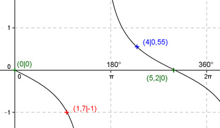

Aufgabe 184 Ergänzen Sie die Wertetabelle für x zwischen 0 und 2π: y = 0,6 tan(-0,6x) x 4 1,7 y 0,55 -1 Periode = π/0,6 = (5/3)π Berechnung der Nullstellen: 0,6 tan(-0,6x) = 0 --> 0,6 tan(-0,6x) = -0,6 tan 0,6x --> Substitution 0,6 x = u --> 0,6 tan u = 0 --> u = k * π mit k = 0, 1, 2, ... --> Rücksubstitution liefert 0,6x = k * π |:0,6 --> x = k * π/0,6 x1 = 0 oder 0°, x2 = π/0,6 = 5,2 gerundet oder 297,9°.  Funktionswert an einer Stelle x ermitteln: 4 * 180° x = 4 oder ---------- = 229,2° π f(4) = 0,6 tan (-0,6 * 4) = 0,6 tan (-0,6 * 229,2°) = 0,55 gerundet. Berechnung der x-Werte für y = f(x) = -1: f(x) = -1 eingesetzt, existiert einmal zwischen 0 und π bzw. 0° und 180° (siehe Graph). 0,6 tan(-0,6x) = -1 |:(0,6) --> tan (-0,6x) = -1,667 --> -0,6x = arc tan(-1,667) = -1,03 |:(-0,6) x = 1,72 (1,7 gerundet) --> 0,6 tan -0,6x (Spiegelung von 0,6 tan 0,6x an der x-Achse) --> 1,7 * 180° x = 1,7 oder ----------- = 97,4° π